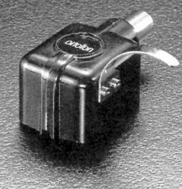
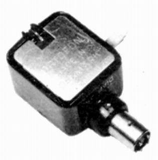

CA25D


■価格 16,700円
■発電方式 MC型
■出力電圧 0.3mV（5�p/sec)
■針圧 3〜4.5g
■再生周波数帯域 20-20,000Hz±1dB
■チャンネルセパレーション
■チャンネルバランス
■コンプライアンス
■負荷抵抗
■直流抵抗 2Ω
■インピーダンス
■針先 0.6mil
■自重 31g
■交換針 交換不可（本体交換）
■発売
〜1973年
■販売終了
1989年頃
■備考 価格は1973年頃のもの
1975年頃で25,000円
1977年頃は28,000円
1979年頃で34,000円（ユニット交換
19,500円)
1987年頃で40,000円（ユニット交換 18,000円)
プロ用モノラル再生専用カートリッジ
CG25D/CA25Dは途中で仕様の変更があった模様
1977年頃以降のCA25D
■出力電圧 1.5mV（5�p/sec)
CG25Dの仕様がいつ変わったかは不明だが、
81年後半の資料では出力電圧 1.5mVとなっている。
また1987年のカタログでは針圧は4〜6gとなっている。